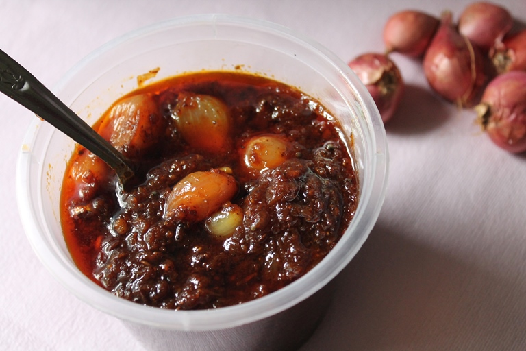

Ingredients:
1)1 Kg Onions (Pyaj), small
2)10 teaspoons coarse mustard powder
3)8 teaspoons aniseed powder
4)4 teaspoons white cumin powder
5)2 teaspoons ground spices
6)3 teaspoons Red chili pepper (Lal Mirchi)
7)7 teaspoons Salt (Namak) for onions
8)2 teaspoons Turmeric (Haldi)
9)1 teaspoon Onions seeds (Kalonji)
10)Juice of 2 Lemons (Nimbu)
11)4 teaspoons amchoor
12)5 to 6 teaspoons Salt (Namak) for the masala
13)1 1/2 cups Oil (Tel) (for narrow bottle)
14)1 teaspoons Black Salt (Kala namak)
How to make onion pickle:
1)Peel the brown layer from the onions.
2)Slit into four, keeping intact at the base.
3)Rub 7 teaspoons salt on the onions and keep for 4 hours overnight.
4)Heat the oil till smoky and cool.
5)Throw the water of the onions and wet all the ground ingredients with lemon juice and 1/4 cup of oil.
6)Fill the masala in the onions and pack in a tall jar.
7)Then pour the rest of the oil over them.
8)Put 1 teaspoon salt on top and keep aside for 12 days and serve.